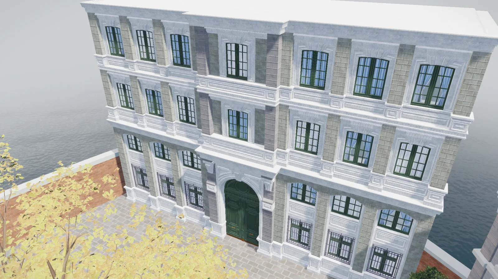
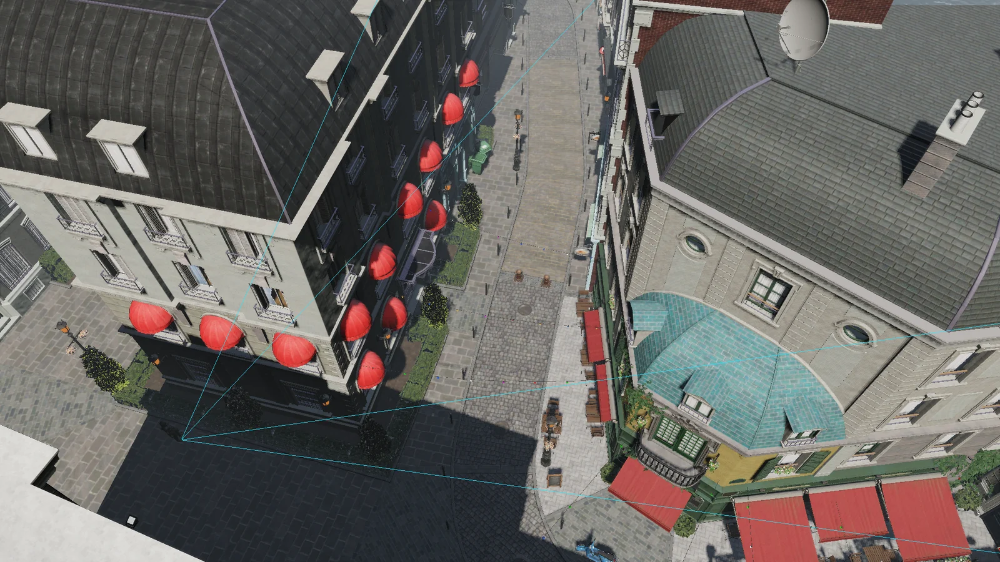

01 · Shadow
Realtime rendering engine
TinyRenderer
C++20과 DirectX 12로 구현한 개인 렌더링 엔진
모델·텍스처 로딩부터 장면 갱신, 화면 렌더링과 GPU 자원 관리까지 구현했습니다.

Scope
구현 범위
- 엔진 코어
- 장면과 에셋 관리, 렌더 패스 구성, GPU 명령 기록과 성능 측정을 구현했습니다.
- RHI 계층
- 렌더링 코드가 특정 그래픽스 API에 직접 의존하지 않도록 공통 인터페이스를 두었습니다. 현재 구현은 DirectX 12이며, Vulkan 확장을 고려해 설계했습니다.
- 외부 라이브러리
- 모델·이미지 파일을 읽는 데 tinygltf·Assimp·DirectXTex를 사용했습니다. 읽은 데이터를 엔진 형식으로 변환하고 관리하는 부분은 직접 구성했습니다.
Code 주요 코드와 설계 사례
Architecture
렌더링 구조
에셋 변환과 로딩
파일 포맷이 달라도 렌더링에서는 같은 형식의 데이터를 사용할 수 있도록 모델·텍스처를 엔진 공통 형식으로 변환해 저장했습니다. 실행 중에는 변환된 데이터를 불러오도록 분리해, 렌더링 코드가 원본 파일 포맷이나 파서에 직접 의존하지 않게 했습니다.
장면 오브젝트 관리
여러 오브젝트가 공유하는 모델 구성과, 각 오브젝트의 위치·회전·애니메이션 상태를 분리해 관리했습니다. 매 프레임 렌더링에 필요한 데이터를 모아 전달하도록 구성해, 장면 상태를 관리하는 부분과 그리기 작업을 분리했습니다.
셰이더 자원 바인딩
Vulkan으로 확장할 때도 같은 HLSL 소스를 사용할 수 있도록, 셰이더에 텍스처·버퍼를 연결하는 번호 규칙을 정했습니다. DX12는 자원 종류가 다르면 같은 레지스터 번호를 쓸 수 있지만, Vulkan의 같은 descriptor set 안에서는 바인딩 번호가 겹치면 안 됩니다. 이에 맞춰 공통 인터페이스에서도 같은 그룹 안의 번호를 자원 종류와 관계없이 중복 없이 배정했습니다.
한 프레임의 렌더링 경로
Frame inputs
렌더링 입력
장면 상태
카메라 · 오브젝트
조명 · 애니메이션
조명 · 애니메이션
엔진 에셋
모델 · 텍스처
머터리얼 · 셰이더
머터리얼 · 셰이더
Frame preparation
이번 프레임을 그리는 데 필요한 장면 데이터를 준비
카메라 · 오브젝트 변환 · 조명 · 애니메이션 결과
↓
Render pipeline
렌더 패스 순서에 따라 그리기와 연산 작업을 구성
가시성 판정 · 머터리얼 선택 · draw와 dispatch 구성
↓
RHI
공통 인터페이스로 자원을 연결하고 명령을 기록
셰이더 자원 바인딩 · draw · dispatch · copy · 자원 상태 전환
↓
DirectX 12 backend
RHI 작업을 DirectX 12 명령으로 변환해 제출
Command List 기록 · Queue 제출 · 동기화
↓
GPU
제출된 명령을 실행하고 렌더링 결과를 생성
graphics · compute · copy 작업 실행
↓
Frame completion
화면을 출력하고 완료된 GPU 작업을 정리
Present · 완료 상태 확인 · 임시 자원 회수
GPU 자원 회수
CPU에서 해제를 요청해도 GPU는 해당 자원을 사용 중일 수 있습니다. 기존 핸들은 즉시 무효화해 새 작업에서 참조하지 못하게 하고, 실제 GPU 객체는 fence로 해당 자원을 사용한 작업의 완료를 확인한 뒤 해제합니다.
Animation
애니메이션 전환과 스키닝
정지·걷기·달리기(Idle·Walk·Run) 동작이 전환될 때 두 애니메이션의 포즈를 섞어 자연스럽게 이어지도록 했습니다. 행렬 자체를 보간하는 대신, 각 노드의 로컬 위치·크기는 선형 보간하고 회전은 quaternion slerp로 블렌딩했습니다.
보간한 로컬 변환은 루트부터 자식 순서로 누적해 각 관절의 장면 좌표계 변환을 구합니다. 이후 관절 변환을 메시의 로컬 좌표계로 옮기고 inverse bind matrix와 조합해, 정점을 현재 포즈로 변형하는 스키닝 행렬을 구성했습니다.
Rendering
렌더링 기능과 진단
02 · Ambient occlusion
SSAO / GTAO comparison

03 · Spatial structure
binned-SAH BVH visualization
물체의 경계 상자(AABB)를 계층으로 묶어 광선이나 검색 영역과 겹치는 후보를 찾습니다. 이후 마우스 피킹이나 충돌 후보 검색에도 재사용할 수 있도록 공간 검색 구조로 분리했습니다.
04 · Visibility
GPU visibility culling A/B
카메라 시야 밖의 물체는 Frustum 컬링으로, 다른 물체에 가려진 물체는 HZB 기반 occlusion 컬링으로 제외했습니다. 제외 결과는 별도의 관찰 카메라와 경계 상자 표시로 확인했고, Geometry pass 시간과 컬링 연산 비용은 GPU 구간을 나눠 측정했습니다.
| GPU 구간 | 적용 전 | 적용 후 |
|---|---|---|
| Geometry pass | 6.09 ms | 4.85 ms |
| GPU visibility pass | — | 0.24 ms |
Geometry pass -20.4%Frustum + HZB visibility pass 비용은 별도 구간으로 함께 표시
RTX 3090 · 1600 × 900 · VSync On
워밍업 60프레임 제외 · GPU 240개 샘플 평균
단일 장면의 해당 패스 비교이며, 전체 프레임 개선율은 아닙니다.
